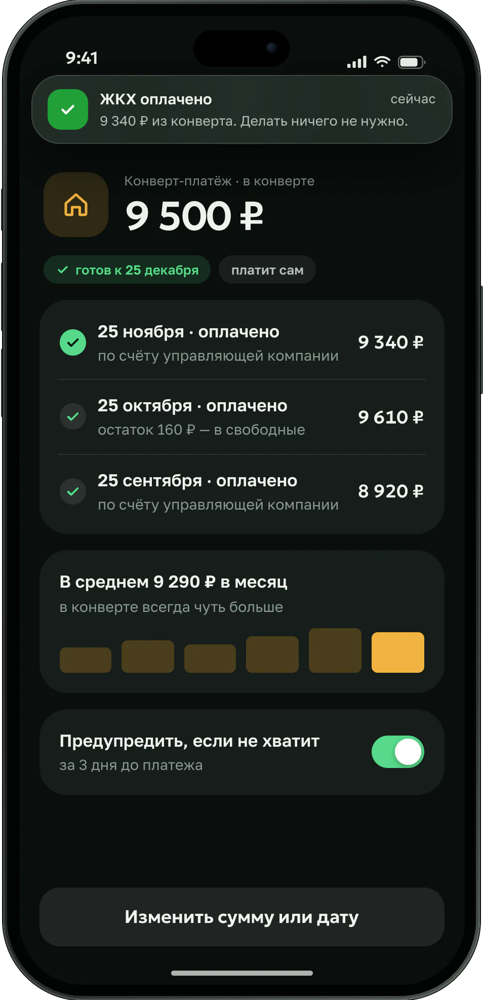
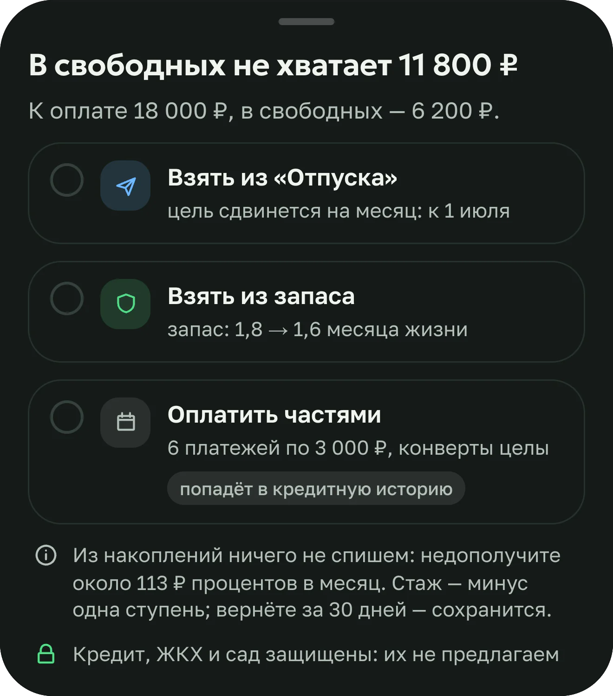

Незапланированная трата решается открыто: клиент видит последствие каждого варианта, ни один не выбран заранее.
Конверты с платежами защищены: их счёт не предлагает.
1. Платёж ушёл сам

2. Трата вне плана: откуда взять

Экран и крупный фрагмент прототипа для iPhone 18 Pro Max. Суммы — пример.